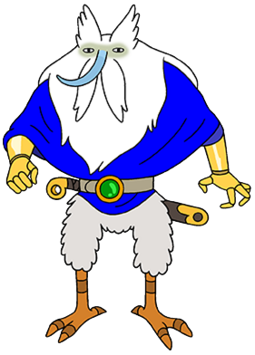

Когда-то давно, ещё до Грибной Войны, Ледяной Король был обычным, темноволосым, имеющим оливковый цвет кожи человеком в очках по имени Саймон Петриков, который учился на археолога, специалиста по части артефактов древности. До Грибной Войны у него была невеста, Бетти, которую он называл "своей принцессой" и очень сильно восхищался ею.
Как-то он купил странную корону, инкрустированную тремя рубинами, у докера в Скандинавии. Придя домой, он надел её, чтобы рассмешить Бетти, но корона стала причиной обморока и дала ему способность видеть разные странности (возможно,так начали проявляться волшебные свойства его глаз волшебника, даруя ему возможность видеть духов), а его настоящие глаза стали белого цвета.
У Петрикова нет никаких воспоминаний о том, что он делал, когда носил корону, но этого было достаточно, чтобы его невеста сбежала. Он больше никогда её не видел, и начал записывать себя на обычные видеокассеты, чтобы люди узнали его историю. С течением времени, Петриков начал слышать голоса и раздражающие видения даже не надевая корону. Чуть позже, его кожа стала голубой, нос стал длинным и острым, его волосы стали белыми и у него отросла огромная борода, а температура его тела упала до - 30 градусов по Цельсию. Несмотря на эти странности его тела и место его проживания, он смог выжить.
Его тело и разум всё больше изменяются под действием короны, и Саймон думает, что он зашёл слишком далеко, чтобы суметь освободится от влияния короны. Хотя он надеется, что былая ясность разума возвратится, и его любимая "принцесса" Бетти вернётся к нему.
В то время, как года (на деле — столетия) проходят, воздействие короны, возможно, усиленное изоляцией, вызвало у него отторжение его былого "я" настолько, что единственной его реакцией на просмотр записанной им кассеты было лишь смущение от того, что он когда-то носил очки. Он больше не человек. Корона исказила его разум, равно как и тело. По расе он определялся как "волшебник".
Ледяной король живёт внутри горы, которая состоит полностью изо льда. Неизвестно, соединён ли его дом с окружающими горами. Его дом состоит из множества комнат и подземных залов. Там есть тюрьма, спальня и секретная комната, где он хранит принадлежности ниндзя , тренажёрный зал, турбинный генератор, кухня, модный подиум и, возможно, еще великое множество комнат. Тем не менее, все они могут быть абсолютно одинаковы, за исключением секретной комнаты, кухни и подиума, и их отличают разве что разные предметы, расположенные внутри.
Эта гора — основная в Ледяном Королевстве, которым правит Ледяной Король. Ледяное Королевство является домом многим существам, как, например, Снежные циклопы, Пингвины, Снежные Големы, Ледяные Быки.
Внешний вид и навыки
|
Ледяной Король — пожилой мужчина низкого роста с голубым цветом кожи, крючковатыми пальцами на руках, тонкими пальцами на ногах, острыми зубами и носом, наподобие гоблинского. В эпизоде "Весёлые секреты, Часть 2" было показано, что до короны нос был нормальным. В эпизоде "Вечнозелёный" было дано объяснение такому изменению его внешности — волшебная корона, что наделила его магией, также изменила его внешность, сделав его похожим на ледяного элементаля, который эту корону и создал — Торопыгу Вечнозеленого.
 Торопыга Вечнозеленый
Он носит тёмно-синюю мантию и имеет огромную белую бороду, которая скрывает большую часть его тела. Хотя от его одежды создаётся впечатление, что он весьма упитанный, на деле, он очень худой. Несмотря на это, Ледяной Король в серии "Что вы наделали?" говорит, что он сидит на диете. Он старается никогда не снимать свою корону, потому что без неё он лишён своих магических сил. На голове его растут коротенькие белые волосы.
Когда Ледяной Король носит свою магическую корону, она даёт ему возможность контролировать все виды и формы льда и снега. Это включает, но не ограничивается швырянием ледяных молний, передвижением льда с помощью телекинеза, созданием ледяных существ, мгновенной заморозкой противников и возможность мгновенно установить зимнюю погоду. В эпизоде "Спасибо" Ледяной Король создаёт полноценный доспех изо льда и говорит, что он неуязвим.
Его борода, по-видимому, частично одушевлена и зачастую работает, как одна из конечностей, которую он может использовать в ближнем бою. Кроме того, она выполняет роль крыльев, что позволяет Королю летать, хотя он должен быть при бороде и при короне, чтобы лететь.
Кроме того, Ледяной Король владеет так называемыми "Глазами волшебника", которые позволяют ему видеть вещи, которые обычные люди видеть не способны, в том числе и воображаемые. Также он постоянно видит странных, уродливых существ. Он, в частности, использовал эту возможность в эпизоде "Смертельная отдача", когда увидел, как Лич завладел телом Принцессы Жвачки.
Различные образы и вариации в разных вселенных
|
• Нежный Король
Нежный Король — это безбородое альтер-эго Снежного Короля, который появляется в серии "Преданность королю"; также Нежный появляется в серии "Обед с принцессами". Причиной его возникновения стало желание Снежного Короля сбрить бороду в надежде, что это сделает его более привлекательным для принцесс, после бесчисленных похищений. Появление на публике в своем безбородом облике, из-за неверного толкования Принцессы Слизи, когда он неправильно представился ("Нежный Король", а не "Снежный Король"), в конечном счёте приводит к тому, что принцессы начали за ним ухаживать. Он также называет Финна и Джейка его верными "Нежными рыцарями", приказывает им взять интервью у своих перспективных принцесс, чтобы он смог выбрать, кого пригласить на свидание. Однако вскоре у него прорастает борода, после чего Финн, Джейк и принцессы понимают, кем он является, и начинают относиться к нему, как и прежде.
•Глупая лошадь
В эпизоде "Глаза" Ледяной Король следит за Финном и Джейом, замаскировавшись под жуткого вида лошадь. Лошадь имеет очень "нелошадиное" лицо с постоянно вылупленными глазами и высунутым языком. Её пустой взгляд приводит Джейка к мысли, что лошадь "безмозглая". Финн и Джейк попробовали множество способов, чтобы избавиться от неё. Когда Финн, наконец, пнул существо, Ледяной Король выскакивает из надувного костюма лошади. Frederator в своем блоге рассказали, что дизайн этой лошади был вдохновлён комиксом Kate Beaton's Hark! A Vagrant, который имеет аналогичного жирного пони
Отношения с другими героями
|
• Бетти
До Грибной Войны у Саймона была невеста, Бетти, которую он называл "своей принцессой" и очень сильно восхищался ею. На ранних стадиях превращения в Ледяного Короля Саймон вёл видеодневник, где в последней записи надеялся, что его сознание в один прекрасный день очистится и Бетти вернётся к нему. Однако с тех пор, как Бетти убежала от него, он её больше не видел.
В серии "Бетти" она попадает в Земли Ууу. Её переносит Саймон Петриков (Ледяной Король вновь стал Саймоном, из-за заклятия, которое вывело из строя корону, лишив её магических свойств). Построив временной портал, Саймон попадает в момент в прошлое, когда Бетти, боясь Ледяного Короля, старалась не попадаться ему на глаза. Бетти прыгает в портал и оказывается в Землях Ууу.
Через некоторое время она спасает Саймона от смерти, вернув силы короне, так как без них Саймон заболевает и начинает стремительно стареть. Надев ее, Саймон вновь становится Ледяным Королем и забывает о Бетти. Он возвращается в свой замок, и как ни в чём не бывало занимается своим привычным делом - похищением принцесс. В последнем кадре серии можно увидеть, что Бетти подлетает к окну его замка, с грустью смотрит на него, а потом вновь улетает.
• Марселин
Когда-то Саймон нашёл ещё совсем маленькую Марселин и решил взять её с собой. В эпизодах "Саймон и Марси" и "Я помню тебя" это наглядно проявляется. Однако, после превращения в Ледяного Короля он совершенно этого не помнил. Очевидно, Марселин относится к нему как к старому другу и по-дружески его любит. Как было показано в эпизоде "Я помню тебя", она желает ему помочь, но не знает как. Она, наверное, единственная, кто не так категоричен в отношении Снежного Короля, ведь он в детстве спас её на руинах разрушенного войной города.